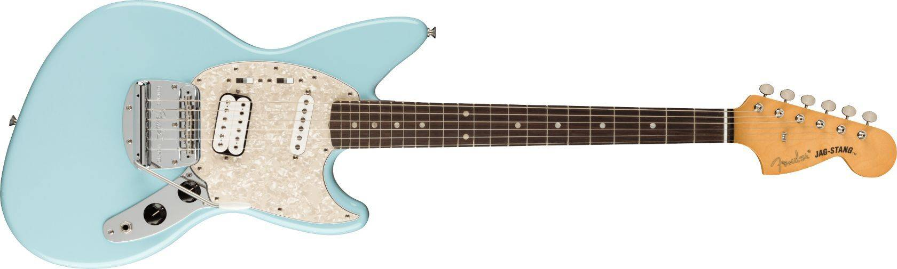

Fender 70th Anniversary Ultra Stratocaster HSS
Celebramos el 70° aniversario de la icónica Stratocaster con una edición especial que reúne las mejores características que la marca puede ofrecer.

|
Guitarras Cuatreras |
|---|
|
NUEVO |
|---|
|
Fender 70th Anniversary Ultra Stratocaster HSS Celebramos el 70° aniversario de la icónica Stratocaster con una edición especial que reúne las mejores características que la marca puede ofrecer. |
|
| Conoce más |
 Fender Jaguar KC |
Gibson Les Paul 50´s |
 Fender Jag-Stang |
|
Copyright ©2025 Guitarras Cuatreras |
|---|